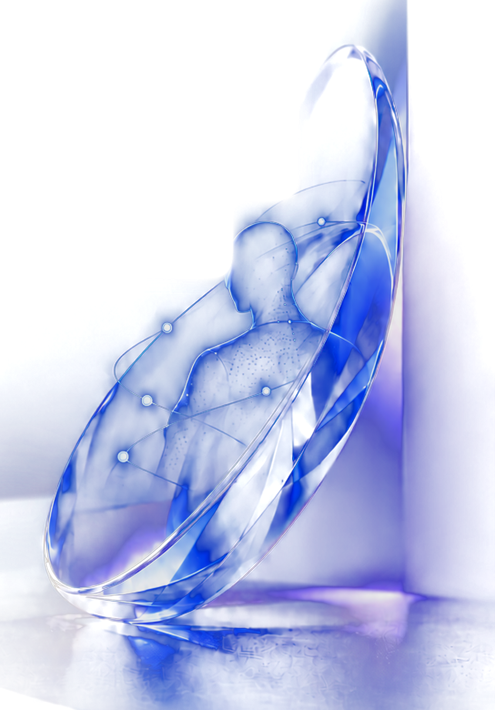

AI 实战训练营
先看清楚：今天有哪些 AI？
对话与写作
写方案、读文档、翻译
 DeepSeek
DeepSeek Kimi
Kimi ChatGPT千问元宝
ChatGPT千问元宝搜索与研究
查资料，出带来源的报告
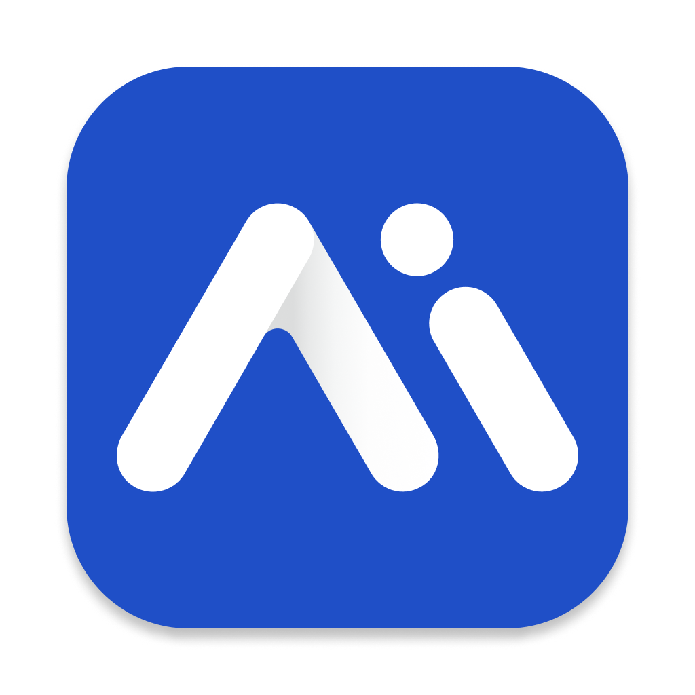
秘塔腾讯 ima Perplexity
Perplexity Gemini
Gemini办公与会议
会议纪要、文档转 PPT
 飞书妙记通义听悟
飞书妙记通义听悟 钉钉Gamma
钉钉Gamma智能体
连续执行，交付文件和网站
 Codex
Codex WorkBuddy
WorkBuddy Grokbot
Grokbot Claude Code
Claude Code搭建 AI 助手
用公司资料搭客服
 扣子
扣子 Dify
Dify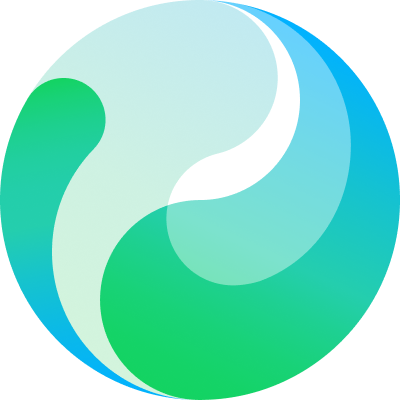
腾讯元器 阿里百炼
阿里百炼图像
海报、产品图、换背景
 即梦GPT 图像Nano Banana
即梦GPT 图像Nano Banana Midjourney
Midjourney视频
文字或图片生成短片
 可灵即梦
可灵即梦 Veo海螺Vidu
Veo海螺Vidu数字人口播
克隆分身做口播
 腾讯智影闪剪HeyGen
腾讯智影闪剪HeyGen声音与音乐
克隆音色、配音、配乐
 MiniMax豆包语音
MiniMax豆包语音 ElevenLabsSuno
ElevenLabsSuno3D
一张照片生成 3D 模型
 混元3DTripoMeshyRodin
混元3DTripoMeshyRodin工具会换，工作系统不会。
好结果不靠神奇提示词，靠一条能重复运行的生产线。
输入
目标、资料、角色、限制
工作台
AI 工具 + 本地文件 + 办公软件
Skill
步骤和格式写成可复用的能力
核验
事实、来源、格式逐项检查
交付
别人能直接用的文件或系统
Codex整理文件、写 Skill、做页面、部署上线
WorkBuddy接邮箱和群聊，推日报和线索
Grokbot梳理业务、查资料、出多个角度
开工前：三个工具装好、登上、连通
Codex执行WorkBuddy连接Grokbot探索打开 Codex，先认 6 个地方
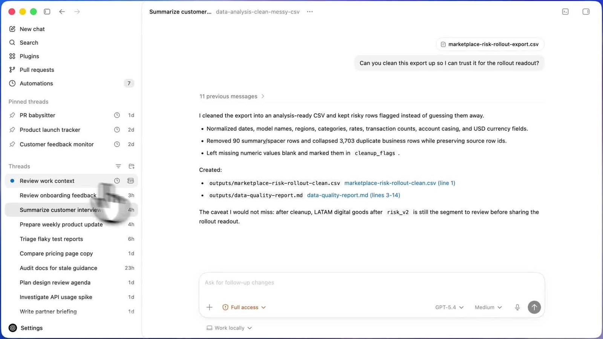
1 2 3 4 5 6- 1左栏Plugins 连外部应用；Scheduled 管定时任务
- 2对话列表一件事一个对话
- 3执行过程读了什么、改了什么，文件点开就看
- 4权限三档，课上用 Ask for approval
- 5智能程度日常 Medium，做 PPT、网站用 High
- 6在哪干活Work locally 在项目文件夹里做
一个业务一个项目，规矩写进 AGENTS.md
建一个业务文件夹
我的业务/ ← 在 Codex 里打开 ├ AGENTS.md 规矩，每次自动读 ├ 业务卡片.md 作业零 ├ 资料/ 原始文件的副本 ├ 知识库/ 作业一 ├ 产出/ PPT、海报、口播稿 ├ assets/ Logo、主视觉 ├ site/ 作业四网站 └ .agents/skills/ 你写的 Skill
把规矩写一次
# 我的业务 深圳 · 工业冷却设备 详见 业务卡片.md # 规矩 - 全部用中文输出 - 数字和案例要注明出处 - 不确定就问我，不要编 - 资料/ 只读，产出放 产出/ - 文件名：日期_主题_版本
权限三档怎么选
WorkBuddy：先选工作空间，再下任务
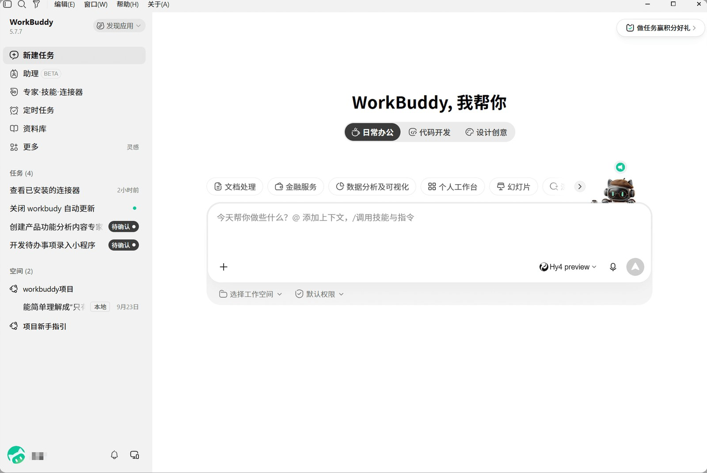
1 2 3 4 5 6- 1左栏连接器接邮箱和群，「定时任务」设自动运行
- 2模式课上用日常办公
- 3输入框@ 引用文件，/ 调技能
- 4模型不确定就用 Auto
- 5工作空间一个任务一个，只放副本
- 6权限越界、删除、跑脚本前先问你
Grokbot：一个 Bot 一个职责，像带新同事
- 1一个 Bot 一个职责先交代职责和边界，再说「记住」
- 2Connect apps授权一次，所有 Bot 共用
- 3技能 → 例行任务跑顺一次，存成技能，再定时
- 4审批卡片对外动作先问你，规则在 Auto-review
- 5输入框/ 调技能，@ 叫其他 Bot
让它们按时自己干活：三种定时任务
CodexWorkBuddyGrokbot三个工具，在四个作业里各干什么
Grokbot · 探索Codex · 执行WorkBuddy · 连接工作台就位 · 业务卡片 · 第一个 Skill
工作台就位
业务文件夹、工作空间、「业务顾问」Bot
写业务卡片Grokbot
让它像顾问一样问你，一项项填完
写第一个 SkillCodex
挑最耗时的一项：输入、步骤、输出、验收
拿真实资料跑一次Codex
按验收标准检查
业务卡片.md
- 我的业务一句话→ 作业二 · 四
- 目标客户是谁→ 作业二 · 四
- 客户最头疼的问题→ 作业三
- 我凭什么能解决→ 作业二
- 2–3 个真实案例→ 作业一 · 二
- 希望客户做什么→ 作业三 · 四
- 我最耗时的工作→ 第一个 Skill
五种做法：按谁来用、资料多敏感来选
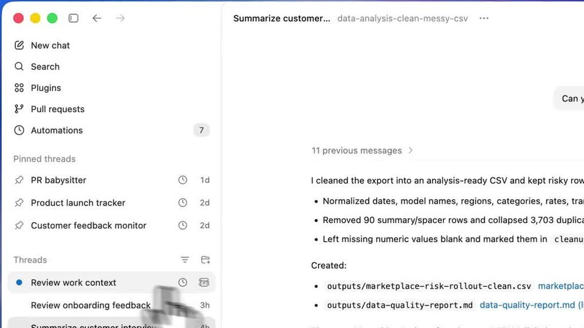
本地文件夹
- 好处
- 文件留在本机，直接拿去做 PPT、网站
- 注意
- 别人用不了；要自己备份
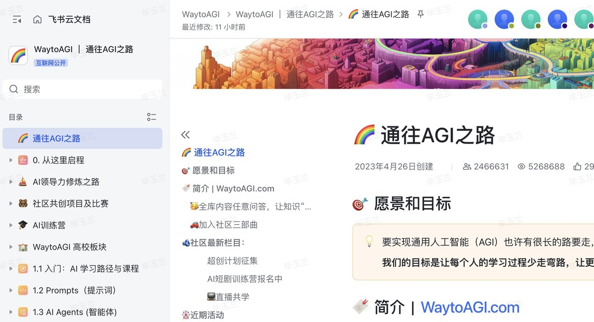
飞书知识库
- 好处
- 按各人权限回答，答案带出处
- 注意
- 超出每人免费额度要另买
微信生态
- 好处
- 员工群里问，客户微信客服里问
- 注意
- 机器人只能进内部群
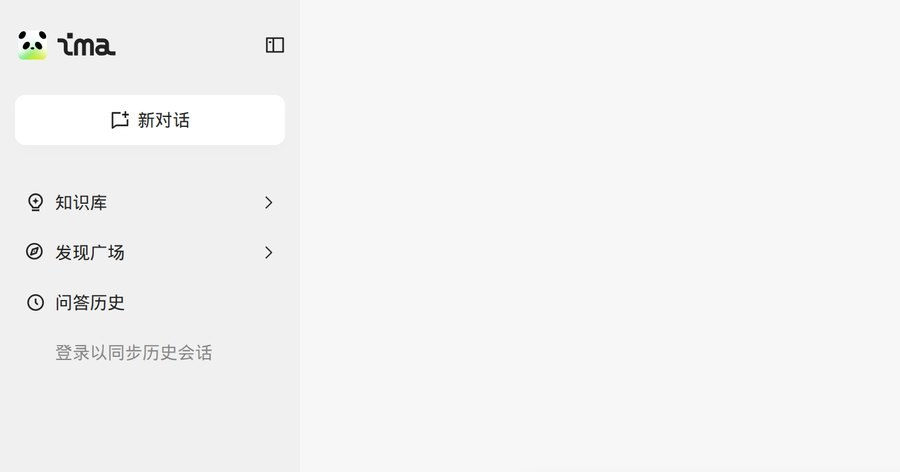
腾讯 ima
- 好处
- 文章、网页、PDF 随手存，再提问
- 注意
- 内部资料别放
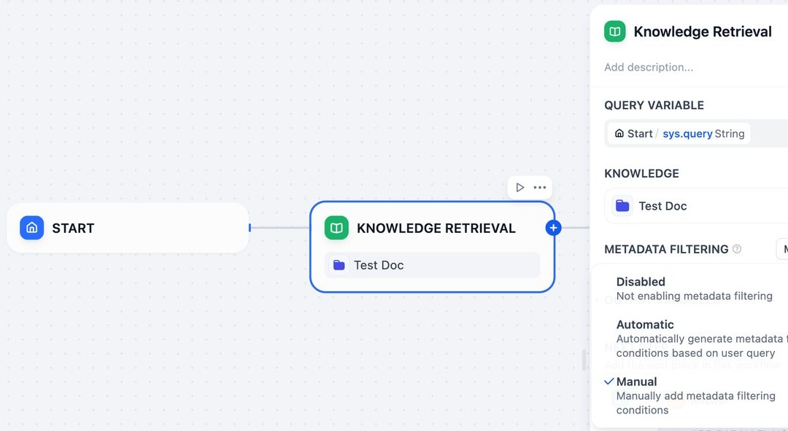
扣子 / Dify
- 好处
- 挂到官网、公众号、企业微信
- 注意
- 资料外的问题设成转人工
以飞书为例：6 步，一个下午搭出第一版
定范围
只做一类问题，先放 20–50 份文件
清洗
删重复和过期，统一命名，标负责人
交给 Codex 批量改名建知识库
新建空间，导入成云文档
写问答对
最常问的 30 问：问题 · 答案 · 出处
AI 先捞一版，人来改开问答
「知识问答」只限这个库，关掉联网
测试和维护
10 个真实问题测，答错改原文
飞书里长这样：建库、提问、看出处
 STEP 03飞书官方截图
STEP 03飞书官方截图左边目录，右边文档
PDF、Word、表格批量上传，自动转云文档
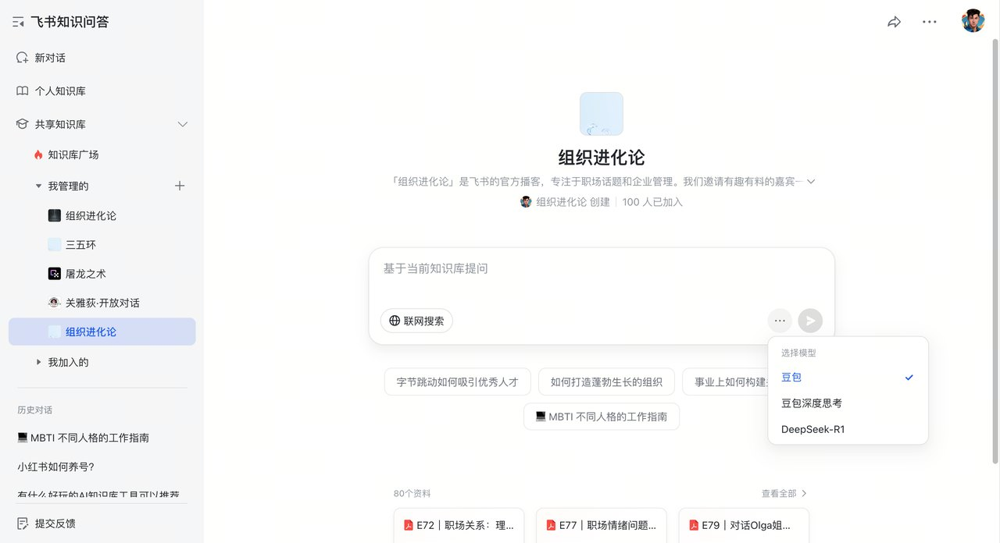
STEP 05飞书官方截图基于当前知识库提问
只在这个库里找，「联网搜索」别开
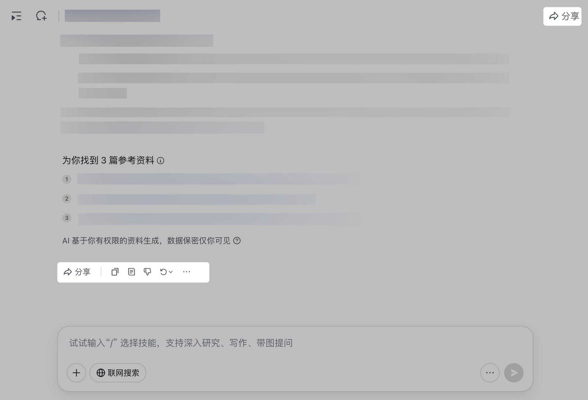
STEP 06飞书官方截图答案下面列参考资料
点编号回原文，只用你有权限的资料
接上邮箱和企业微信，每天 8:30 自动出日报
STEP 1–2连接器：扫码授权

STEP 3新建定时任务
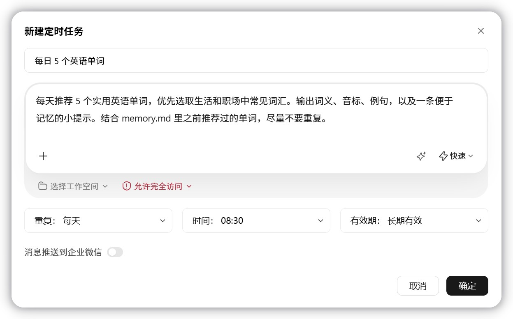
业务知识库 · 个人邮件助理
整理业务文件夹Codex
改名、归类，生成总索引
知识库问答CodexGrokbot
问 3 个真实问题，补 1–2 条公开资料
配置邮件助理WorkBuddy
连测试邮箱，每天 08:30 分类、摘要、起草，推企业微信
整理 FAQ 素材Codex
挑出客户最常问的 5 个问题
交付物
- 一套业务知识库答案带出处
- 一个个人邮件助理每天分类、摘要、起草
- 一份日报模板明天上班就能用
- FAQ 素材→ 作业四网站 FAQ 直接用
为你的业务做 PPT 和海报
定观众和一句话结论Grokbot
给 3 个角度，你选一个
生成 5 页 PPT 和讲稿Codex
只用知识库里的事实，讲稿写进备注
改两轮WorkBuddy
先看逻辑再看表达，发群收反馈
同一主题做一张海报Codex
先排层级再出视觉，存进 assets/
交付物
- 一份 5 页 PPT可修改，含讲稿
- 一张可发布的海报朋友圈、社群都能用
- 视觉资产→ 作业四网站首屏直接用
做一条业务口播视频
选钩子，写 60 秒口播稿GrokbotCodex
3 个开头选一个，按五段写，结尾指向网站
设置形象和声音
平台授权形象或本人素材
生成、配字幕、剪节奏
加字幕，删拖沓
写好发布文案Codex
标题、封面、话题标签
交付物
- 60 秒口播视频→ 作业四嵌入网站，也能直接发
- 一份口播稿模板换个选题就能用
- 一条内容流水线每周稳定产出
每家 AI 爱引用的来源不一样
DeepSeekKimiGEO 5 步，每月循环一次
测现状
20 个客户会问的问题，分点名、品类、比较几类，各家 AI 问一遍
Grokbot 批量跑，存成表格写事实底稿
名称、主体、主营、不做什么、资质、案例、联系方式
从作业一知识库里提取补官网
FAQ 用客户原话：问题 → 结论 → 依据 → 数据
Codex 按这个格式改写铺信源
按 AI 爱引用的平台铺，名称和简介都和底稿一致 → 第 50 页
一篇稿改成各平台版本复测
同一组问题每月再问：提到你没有、说得对不对、引用了谁
把你的业务网站上线
写清楚三件事
谁来、做什么、留下什么
生成首页和表单CodexGrokbot
主视觉、视频、FAQ 用前面的作业
本地预览，按清单自查Codex
电脑手机各看一遍，按 SEO 8 项修
部署上线，接通知CodexWorkBuddy
生成网址，线索推企业微信
交付物
- 一个可访问的网址海报、视频、FAQ 都在
- 一个能收线索的表单提交后自动通知你
- 一份 SEO / GEO 清单每月复测
把 AI 变成
自己的工作系统。
工具会更新，流程会迭代，但真正属于你的工作方式，会越来越清楚。